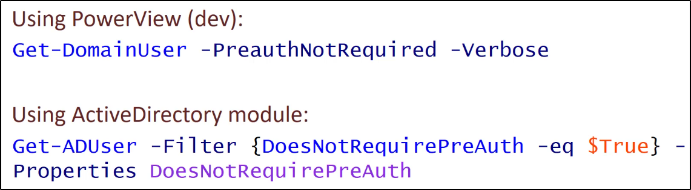

Target Kerberoasting - AS-Rep
Se l'UserAccountControl (UAC) di un utente ha l'opzione
"Do not require Kerberos preauthentication",
è possibile prendere un AS-REP (vedi immagine sotto, fase 2)
e provare un bruteforce password offline
Inoltre, con sufficienti permessi (GenericWrite o GenericAll),
La preauthentication di Keberos può essere disabilitata!

Enumerare gli account che hanno la Pre-Authentication di Kerberso disabilitata:


E' possibile forzare la disabilitazione della pre-auth di Kerberos:

Con questo comando, cerchiamo utenti appartenenti a RDPUsers:
meglio se hanno dei permessi forti come "GenericAll"!

Disabilita la pre-auth di Kerberos per un determinato utente:


Eseguiamo Get-ASREPHash per ottenere un AS-REP da cracakre:

E' possibile crackarlo usando Hashcat o John The Ripper
(Sotto una versione "jumbo" di JTR)
https://github.com/openwall/john